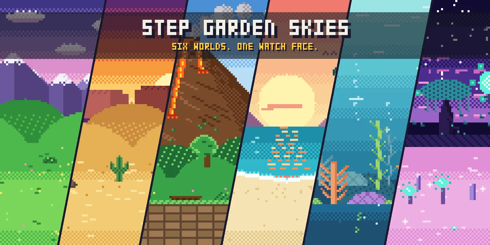
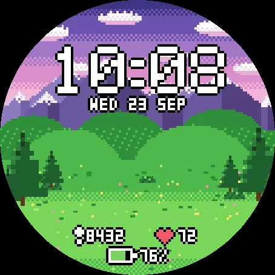
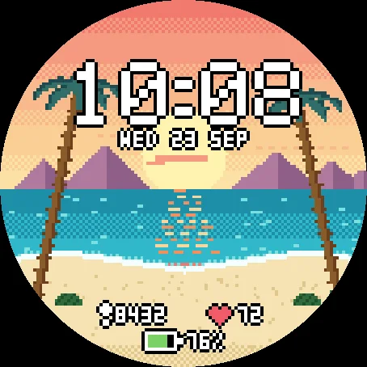
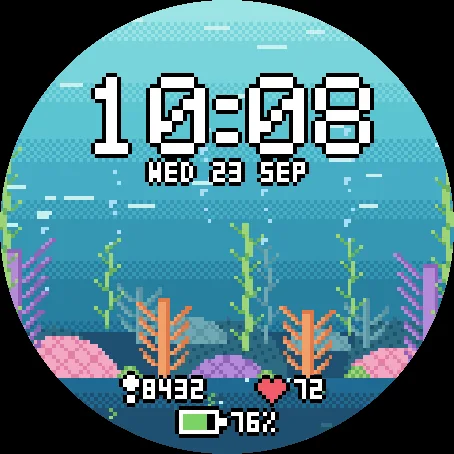
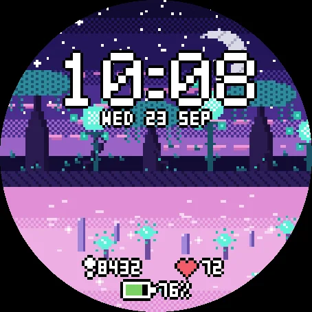
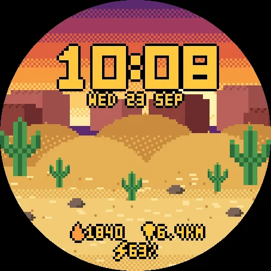
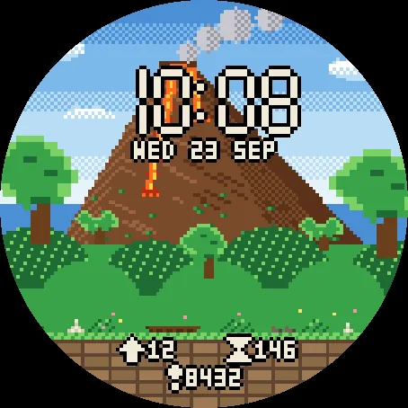
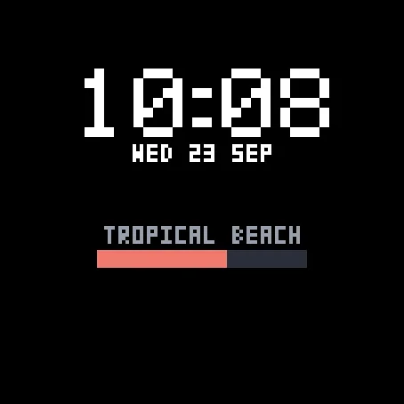
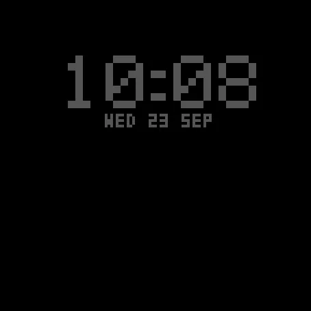

Choose your world - on the watch
Hold UP, pick Watch Face, select Step Garden Skies, press START, then Customize. Everything is there: the world, the rotation, the three fields, the date, the color and the digits. The same settings are in Garmin Connect if you prefer the phone.
Six worlds
The landscapes of Step Garden, the pixel-art garden game, drawn at the grain of the watch: a mountain meadow, a desert at sundown, a jungle at the foot of a volcano, a tropical beach at sunset, a pastel coral reef and an alien jungle under a crescent moon. Same universe, no plants to grow here: just the view.
Keep one world, or let it rotate - every hour, 3, 6 or 12 hours, every day or every week. Follows the clock walks through the day instead: meadow at dawn, jungle in the morning, desert at noon, reef in the afternoon, beach at sunset, alien jungle at night.
Your three fields
Left, right and bottom, each set to what you want to see: steps, heart rate, battery, calories, floors climbed, distance, active minutes of the week, Body Battery - or nothing at all. The date can be hidden too. When the watch has no reading, the field shows -- rather than a made-up number.
Read at a glance
Big pixel digits with a dark outline, readable on a bright reef as on a starry night. Three styles: Pixel, Bold and a retro seven-segment. Seven text colors, including one that matches the world on screen.
Always-on that rests
In always-on mode the landscape switches off. Only the time and date stay, in a single grey, and they drift a few pixels every minute to protect the AMOLED screen. Nothing else is lit.
First look
The landscape is painted once, over the first seconds after the watch face is installed or the world changes. A loading screen names the world and shows how far it has got - and the time is already in place.
Watches
Every watch below was run in the simulator, normal and always-on, before being listed. AMOLED screens only.
- Forerunner 165 / 165 Music / 265 / 265S / 570 / 965 / 970 Venu 2 / 2S / 2 Plus / 3 / 3S / 4 vivoactive 5 / 6 fenix 8 / 8 Pro / E, epix (Gen 2) / epix Pro (Gen 2)
- Instinct 3 AMOLED, MARQ (Gen 2), Descent G2 / Mk3, D2 Air X10 / Mach 1 / Mach 2 / Mach 2 Pro, Approach S50 / S70
Floors climbed is not available on vivoactive 5, vivoactive 6 and Approach S50: the field shows -- there.
One permission, sensor history, for one field: Body Battery. No phone app, no account, nothing leaves the watch.
Like the worlds? Step Garden, the game these landscapes come from, is on the store too: walk, earn coins, grow a garden in each of them.